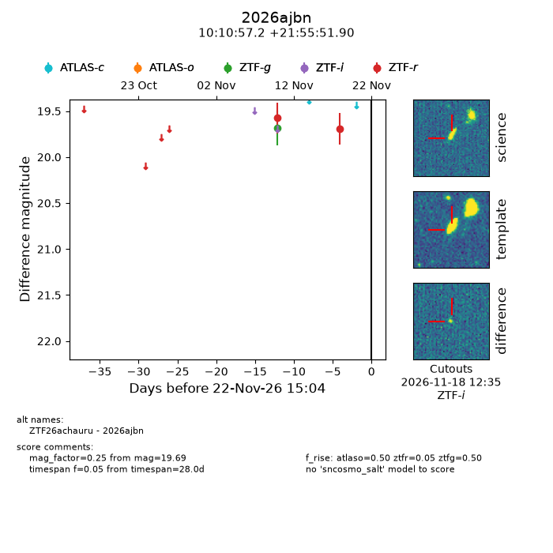
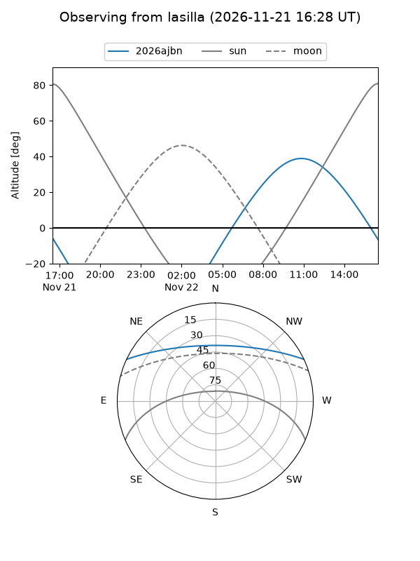
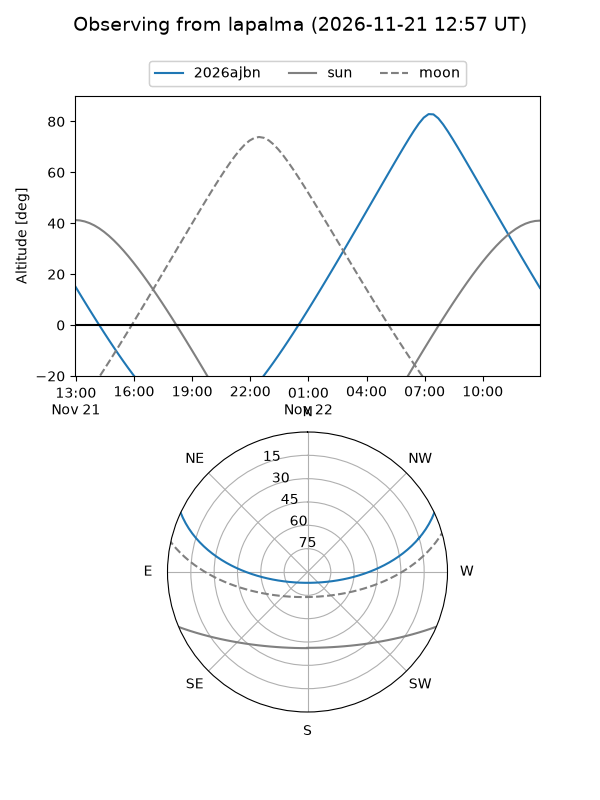
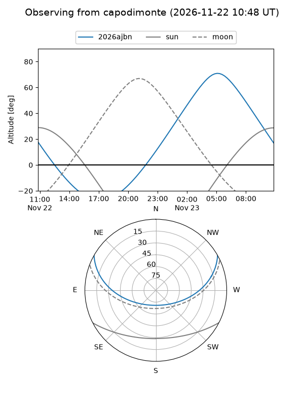

2026ajbn
Target 2026ajbn at 2026-11-22 15:05
Aliases and brokers:
FINK-ZTF: ztf.fink-portal.org/ZTF26achauru
Lasair-ZTF: lasair-ztf.lsst.ac.uk/objects/ZTF26achauru
ALeRCE-ZTF: alerce.online/object/ZTF26achauru
YSE-PZ: ziggy.ucolick.org/yse/transient_detail/2026ajbn
TNS name: wis-tns.org/object/2026ajbn
Direct TNS query: direct search
alt names
ZTF26achauru (ztf,fink_ztf)
2026ajbn (tns,yse)
Coordinates:
equatorial (ra, dec) = 152.7382,+21.93108
equatorial (HMS+DMS) = 10:10:57.16,+21:55:51.90
galactic (l, b) = (212.0739,+53.28451)
Flags:
peak dt:
Photometry:
last atlaso=nan, ztfg=19.68, ztfr=19.69
1 atlaso, 1 ztfg, 2 ztfr detections
Lightcurve

Visibility



Additional plots